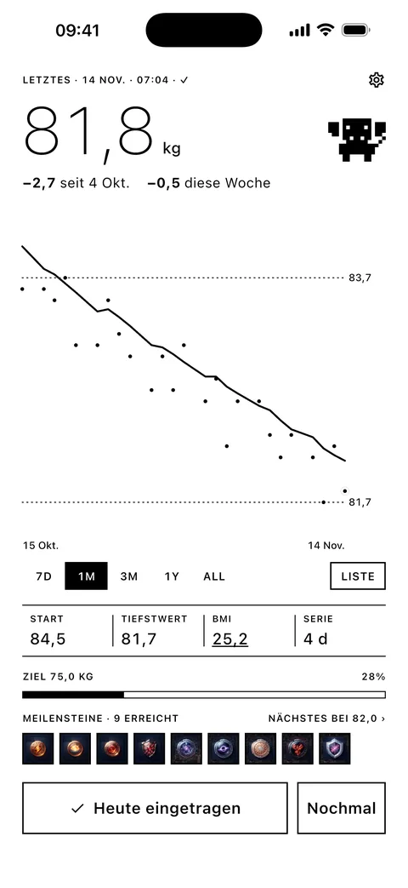
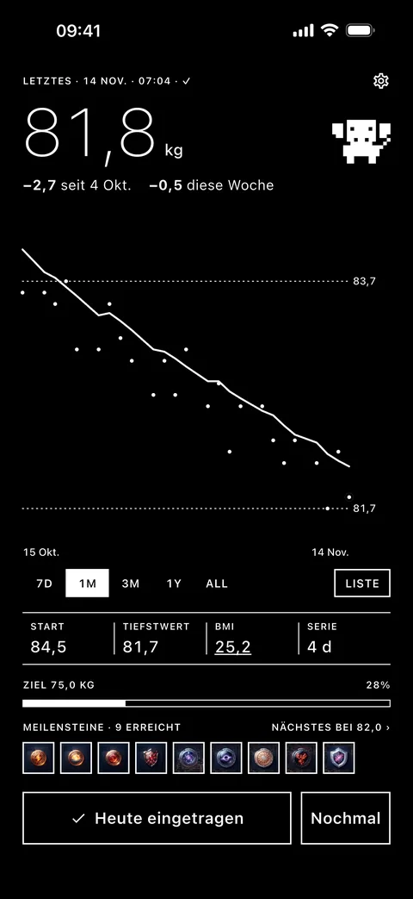
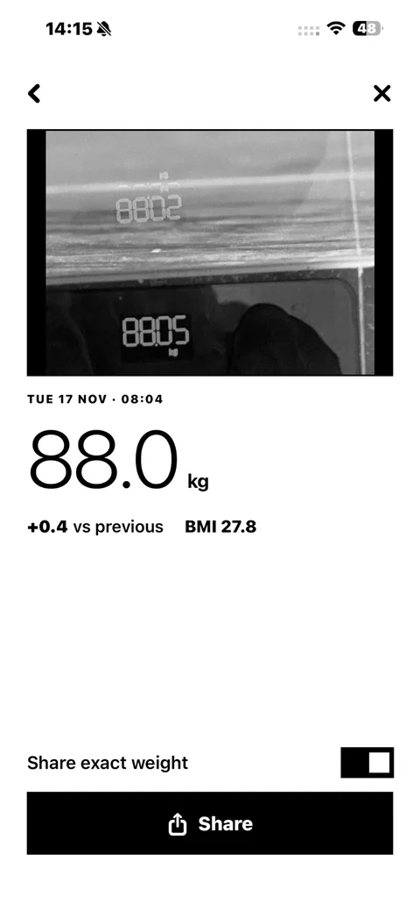
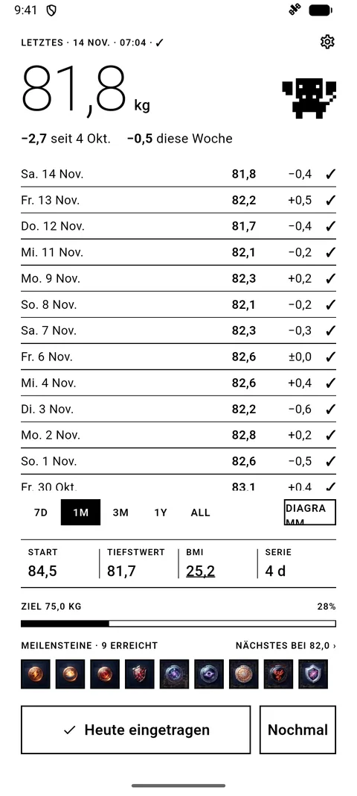
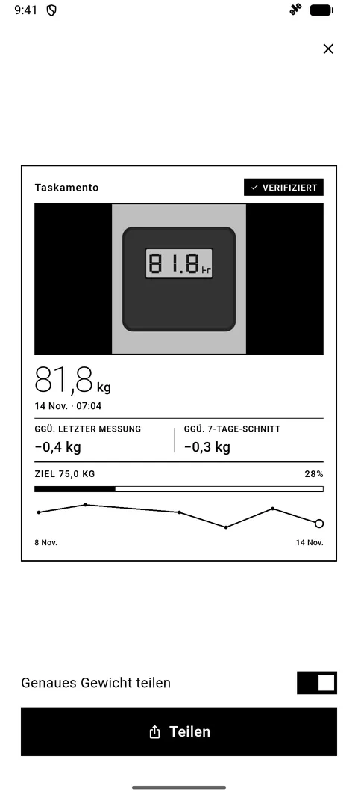
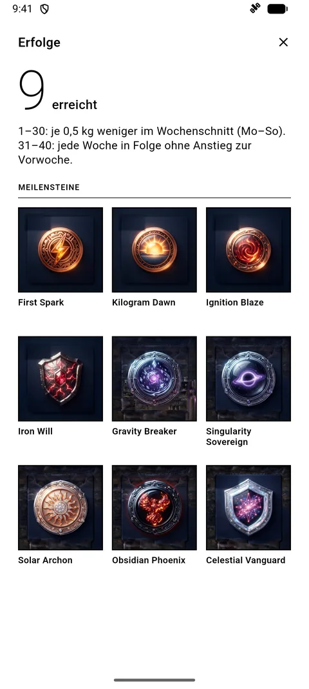
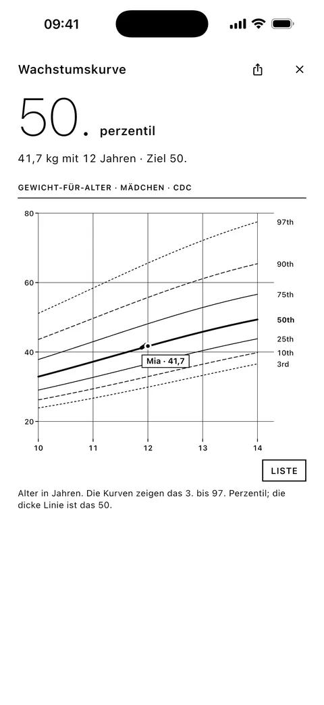
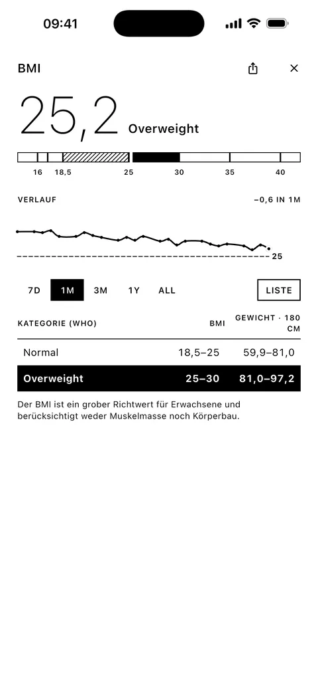
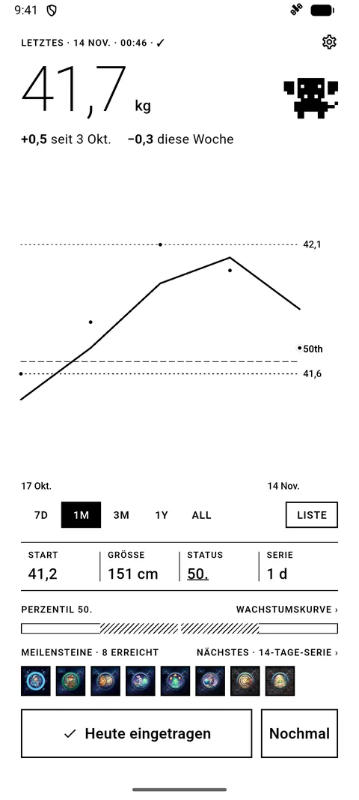

Gewichtstagebuch · iPhone und Android
Taskamento
Eine Seite. Zwei Farben.
Kein Schnickschnack.
Auf die Waage, Foto machen, Zahl speichern. Ein paar Sekunden am Tag, dann geht dein Leben weiter. Keine Feeds, kein Konto, kein Tracking, keine Werbung.
- Bald imApp Store
- Bald beiGoogle Play
- iOS 16 oder neuer
- Android 7.0 oder neuer
- Deutsch · English


Warum Taskamento
Weniger App. Mehr Gewohnheit.
Ein paar Sekunden am Tag
Öffnen, fotografieren, speichern. Keine Menüs zum Lernen, keine Formulare, nichts vorher einzurichten.
Fokussiert
Gewicht, Verlauf und Ziel auf einer Seite. Kein Feed, kein Coach, kein Kalorienzählen, keine Pop-ups.
Privat von Grund auf
Kein Konto, kein Server, keine Cloud. Einträge und Fotos verlassen dein Telefon nur, wenn du sie selbst teilst.
Kein Tracking
Keine Analyse, keine Werbung, keine Daten verkauft oder weitergegeben. Wir sehen dein Gewicht nicht und wollen es auch nicht.
Einmal bezahlt
Kein Abo. Eintragen, Verlauf und BMI gehen ganz ohne Kauf.
Ruhig fürs Auge
Nur Schwarz und Weiß, hell oder dunkel. Nichts blinkt, nichts buhlt um deine Aufmerksamkeit.
So geht's
Draufstellen. Knipsen. Fertig.
Ein Knopf unten: Gewicht von heute eintragen. Er öffnet die Kamera, du fotografierst die Waage und speicherst die Zahl. Das ist die ganze Routine.
- Jedes Foto bleibt beim Eintrag: ein ehrlicher Beleg für jedes Wiegen
- Foto oder kurzes Video aufnehmen oder aus deinen Fotos wählen
- Fotos werden schwarz-weiß gezeigt und bleiben auf deinem Telefon

Eine Seite
Alles Wichtige, ohne zu scrollen.
Dein letztes Gewicht, die Veränderung seit dem letzten Eintrag und seit dem Start, und ein Verlauf für 7 Tage, 1 Monat, 3 Monate, 1 Jahr oder insgesamt, mit 7-Tage-Durchschnitt.
- 84,5Start
- 81,7Tiefster
- 25,2BMI
- 4 TSerie
Darunter: dein Zielbalken und deine Meilensteine. Mit LISTE siehst du jeden Eintrag.

Fortschritt teilen
Den Fortschritt teilen, die Zahl behalten.
Wer erzählt, wie es läuft, bleibt leichter dran. Eine Freundin, der Partner, die Familiengruppe: Eine Karte genügt.
- Eine klare Schwarz-Weiß-Karte mit Gewicht, Foto, Zielfortschritt und den letzten 7 Tagen
- Du kannst das genaue Gewicht ausblenden und nur den Fortschritt teilen
- Dein Name steht nie auf der Karte

Was die Forschung sagt
Teilen hilft dranzubleiben.
- 138
Studien, rund 20.000 Menschen
Den eigenen Fortschritt festzuhalten hilft, ein Ziel zu erreichen, und es hilft mehr, wenn er aufgeschrieben und mit anderen geteilt wird.
- 66 % vs. 24 %
hielten das Gewicht
Wer mit Freunden an einem Abnehmprogramm teilnahm und Unterstützung bekam, hielt das verlorene Gewicht viel öfter vollständig als wer allein kam. 95 % von ihnen beendeten das Programm, gegenüber 76 %.
- Rechenschaft
machte den Unterschied
In Abnehmstudien mit regelmäßigem Wiegen nahmen Menschen deutlich mehr ab, wenn sie jemandem Rechenschaft ablegten.
Diese Studien untersuchten Abnehmprogramme und das Verfolgen von Zielen allgemein, nicht Taskamento. Taskamento ist ein Tagebuch, kein Programm.
Meilensteine
Vierzig Meilensteine und ein Pixelhund.
- 40 Meilensteine, einer für jedes halbe Kilo auf dem Weg zum Ziel
- Eine Tagesserie fürs Eintragen
- Ein kleiner Pixelhund, der atmet, wedelt, bellt und springt, wenn du einträgst
Die Bilder der Meilensteine sind die einzige Farbe in der App.

Für Erwachsene und Kinder
Ein Ziel für Große. Eine Wachstumskurve für Kinder.
- Erwachsene: Zielbalken und maßstabsgetreuer BMI-Balken mit Verlauf
- Kinder und Jugendliche unter 20: Perzentilkurven Gewicht nach Alter auf Basis der CDC-Wachstumskurven, ohne Gewichtsziel
- Mehrere Profile auf einem Telefon

Datenschutz und Sicherheit
Dein Gewicht geht niemanden etwas an.
Taskamento speichert alles auf deinem Telefon, im eigenen geschützten Speicher der App. Es gibt nichts, wofür du dich anmelden musst, und nichts, was irgendwo durchsickern könnte.
- Kein Konto, keine Anmeldung: App öffnen und loslegen
- Kein Server, keine Cloud: Wir erhalten weder deine Einträge noch deine Fotos
- Keine Analyse, kein Tracking, keine Werbung, keine Datenhändler
- Eine Teilen-Karte verlässt dein Telefon nur, wenn du sie verschickst, und zeigt nie deinen Namen
- App löschen, und alles ist weg: Nirgends bleibt eine Kopie zurück
Details
Die kleinen Dinge.
Einheiten
Kilogramm, Pfund oder Stone; Zentimeter oder Fuß und Zoll.
Erscheinungsbild
Weiß, Schwarz oder automatisch wie dein Telefon.
Erinnerung
Eine tägliche Erinnerung zur gewünschten Uhrzeit.
PDF-Bericht
Für den Arzt, mit Verlauf und allen Messungen (Vollversion).
Profile
Bis zu fünf Personen auf einem Telefon, Kinder eingeschlossen.
Sprachen
Deutsch und Englisch.
Bilder
Schau mal rein.
Eine Seite Teilen-Karte 
BMI Alle Einträge Meilensteine In Schwarz 
Für ein Kind Wachstumskurve
Vollversion, einmal bezahlt
14 Tage alles ausprobieren.
Wiegen mit Foto, Verlauf und BMI geht ohne Kauf.
In den ersten 14 Tagen kannst du auch mehrere Profile, Teilen-Karten und Meilensteine ausprobieren. Ein Kauf schaltet sie dauerhaft frei und bringt den PDF-Bericht für den Arzt dazu.
Kein Abo, keine Werbung.
Taskamento ist ein Tagebuch und gibt keine medizinische Beratung. BMI und Wachstumsperzentilen sind allgemeine Richtwerte. Sprich bei Fragen zu deinem Gewicht oder dem deines Kindes mit einer Ärztin oder einem Arzt.
Bald auf deinem Telefon.
Taskamento kommt in den App Store fürs iPhone und zu Google Play für Android. Fragen oder Ideen? Schreib uns gern.